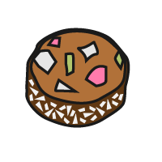
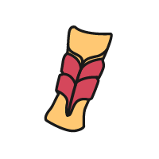

part ring
A kind of British biscuit, round with a hole in the middle and a layer of hard coloured icing on top.

lolly cake
A kind of new zealand biscuit, cake that contains pieces of soft confectionery

dango
Dango (団子) is a Japanese dumpling made from rice flour mixed with uruchi rice flour and glutinous rice flour.

Maejakgwa
The origin of jalebi is unknown, however there is documented early history of a Middle Eastern variety known as zalabiyeh.

Maejakgwa
Maejakgwa 매작과 is a traditional Korean confection made with ginger-flavored flour dough in a ribbon shape.